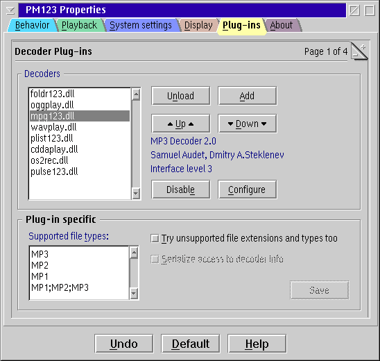

PM123's Decoder Plug-ins Configuration

Decoder List
Select a decoder from the list to view additional information
and manipulate the plug-in.
Buttons
- Unload
- Unloads the currently selected plug-in completely.
- Add
- Add a plug-in DLL.
- Up / Down
- Move the selected plug-in up or down in the list.
This has at the very most performance effects
as long as you do not use different plug-ins that can handle the same files.
- Enable / Disable
- Enables/disables the selected plug-in.
- Configure
- Available only if the plug-in is configurable.
Click this button to set plug-in's settings.
Double-click a plug-in from the list box aside has the same effect.
Plug-in specific settings
Here you can adjust some plug-in specific settings.
Remember that you won't change anything unless you press the save button.
- Supported file types
- Use the plug-in for this (additional) file types.
- Try unsupported files too
- Normally a decoder is not invoked for files
that do not match either the list of supported file extensions provided by the decoder
or one of the PM file types from the list at the left.
Checking this options tries to invoke this decoder for other files too
if no other decoder is able to handle the file.
Anyway the decoder must support the file content and the transfer protocol.
- Serialize access to decoder info
- This option is available for plug-ins with the older interface.
It is a work-around for broken plug-ins.
You should enable it, if you encounter crashes when loading or viewing large playlists
with many objects that are handled by the selected decoder.